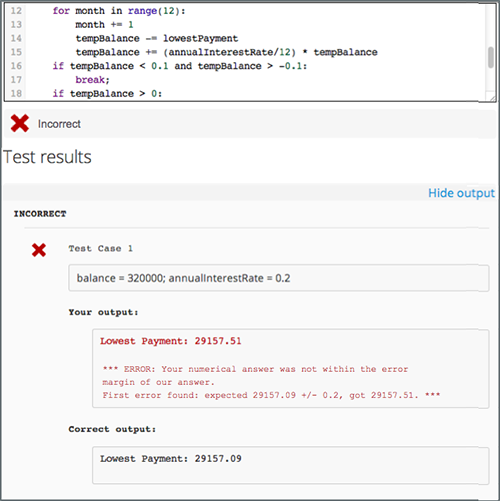

10.14. External Grader#
Note
EdX offers provisional support for this tool.
An external grader is a service that receives learner responses to a problem, processes those responses, and returns feedback and a problem grade to the platform. Course teams build and deploy a grader on an external platform, such as Amazon Web Services (AWS) or Azure, and then link their external grader to the platform using an interface called XQueue. XQueue is a Representational State Transfer (RESTful) interface that uses JavaScript Object Notation (JSON) objects.
For more information, see the following sections.
10.14.1. External Grader Workflow#
XQueue uses the following workflow for external grader problems.
In the learning management system (LMS), the learner either enters code or attaches a file for a problem, then selects Submit.
The LMS sends the learner’s code to XQueue.
The external grader actively retrieves, or pulls, the code from XQueue.
The external grader runs the tests that you created on the code.
The external grader returns the grade for the submission, as well as any messaging in a JSON, to XQueue.
The XQueue delivers the results to the LMS.
In the LMS, the learner sees the problem results and the grade.
For the code for the XQueue interface, see the urls.py file in the edX
XQueue repository.
10.14.2. External Grader Example#
An external grader is particularly useful for software programming courses where learners are asked to submit complex code. The grader can run tests that you define on that code and return results to a learner.
For example, you define a problem that requires learners to submit Python code, and create a set of tests that an external grader can run to verify the submissions. When a learner enters Python code for the problem and selects Submit, the LMS sends the code to the grader for testing. If the code passes all tests, the grader returns the score and a message indicating that the solution is correct. The learner can see the message by selecting See full output. A message can be useful when the learner’s solution is not correct and you want to return information about the failed tests, as in the following example.
10.14.3. External Grader Problem Requirements#
An external grader problem in Studio must have the following requirements.
A GNU PG key.
An XQueue name.
An external grader that meets platform requirements.
An OLX definition for the external grader.
10.14.3.1. GPG Key#
Before you can add an external grader problem, you must obtain a public GNU Privacy Guard (GPG) key. For information about how to obtain a GPG key, see the GnuPG website.
10.14.3.2. XQueue Name#
The external grader problems in your course must use a specific XQueue name. You create the name for the XQueue that your course uses when you request account credentials.
To request account credentials, contact the system administrator for your instance of the Open edX platform.
10.14.3.2.1. Testing Your XQueue Credentials#
We strongly recommend that you test your XQueue credentials when you receive them. To test your XQueue credentials, run the following commands at a command prompt. Replace the placeholder values with the values for your credentials.
curl -v -d "username=&password=" "https://xqueue.edx.org/xqueue/login/"
curl -v -b "sessionid=returnedbylogin" "https://xqueue.edx.org/xqueue/get_queuelen/?queue_name=your_q"
curl -v -d "username=&password=" "https://xqueue.edx.org/xqueue/login/"
curl -v -b "sessionid=returnedbylogin" "https://xqueue.edx.org/xqueue/get_queuelen/?queue_name=your_queue_name"
10.14.3.3. XQueue JSON Objects#
Both the learner submission that XQueue sends to the grader, and the response that the grader sends to XQueue, are JSON objects.
Note
XQueue does not send the learner ID to the external grader. Your grader cannot access IDs or associate learner IDs with submissions.
10.14.3.3.1. Learner Submissions#
The grader must receive a JSON object as a learner submission. The JSON object has the following keys.
xqueue_header: A dictionary that the grader uses to identify the submission when the grader returns the submission to XQueue. Do not edit this dictionary. Return this dictionary to XQueue in the samexqueue_headerpart of the JSON object.xqueue_files: A dictionary of key/value pairs that contains a list of files that the learner submitted. In this dictionary, each key is a file name, and each value is the location of the file.xqueue_body: A dictionary that contains the actual submission as JSON.student_info: A dictionary that contains the following information about the student in relation to this submission.anonymous_student_id: A string that contains an anonymized identifier of the student.submission_time: A string that contains a timestamp with the time of submission inYYYYMMDDHHMMSSformat.random_seed: If a randomization script is attached to the problem,random_seedis an integer that contains the seed that initializes the randomization script.
student_response: A string that contains the learner’s code submission. A learner can submit code by entering a string in the LMS or by attaching a file. XQueue stores files that learners upload inxqueue_files.grader_payload: An optional string that you can specify when you create the problem. For more information, see Create an External Grader Problem in Studio.
An example JSON object for a learner submission follows.
{
"xqueue_header": {
"submission_id": 72,
"submission_key": "ffcd933556c926a307c45e0af5131995"
}
"xqueue_files": {
"helloworld.c": "http://download.location.com/helloworld.c"
}
"xqueue_body":
"{
"student_info": {
"anonymous_student_id": "106ecd878f4148a5cabb6bbb0979b730",
"submission_time": "20160324104521",
"random_seed": 334
},
"student_response": "def double(x):\n return 2*x\n",
"grader_payload": "problem_2"
}"
}
10.14.3.3.2. External Grader Responses#
After the grader runs tests and records the results for a submission, the grader must return information by posting a JSON response. The JSON string contains a value that indicates the following information.
Whether the submission was correct.
The score for the problem.
Any message that the tests create.
In the following example external grader response, the learner’s submission was correct, the score was 1, and the tests created a brief message.
{
“xqueue_header”: {
Identical to what was received from the xqueue
},
“xqueue_body”: {
"correct": true,
"score": 1,
"msg": "<p>The code passed all tests.</p>"
}
}
10.14.3.4. External Grader Requirements#
The course team builds and deploys the external grader.
When you build your external grader, keep the following requirements in mind.
To communicate with XQueue, the grader must accept and return JSON objects. For more information, see XQueue JSON Objects.
The external grader must actively retrieve, or pull, submissions from the XQueue through a RESTful interface at regular intervals.
The following repositories contain examples of external graders that use pull mode.
The grader must be scalable. Many learners might submit responses at one time, such as shortly before an exam is due. The grader must be able to process many submissions in a limited time, without failure or unexpected delays.
The grader must not constantly send queries unless the grader detects that the
queuelenvalue is growing. If XQueue receives too many requests from a grader, the XQueue system administrator may apply throttling to the grader.The grader must implement security features.
You are responsible for the server that runs the code that learners submit. Your system must protect against learners who might submit malicious code and ensure that the external grader runs only code that is relevant to the course problems. Your specific security implementation depends on the programming language that you are using and your deployment architecture. You must ensure that malicious code will not damage your server.
You must have a plan to immediately notify the team that operates your grader, as well as your Open edX system administrator, if the grader fails. You must also have a process to quickly identify the cause of the failure, whether the problem is with your grader or XQueue.
If you know the grader will be unavailable at a certain time for maintenance, you should add a course update.
You must test the grader thoroughly before your course starts. Be sure to test incorrect code as well as correct code to ensure that the grader responds with appropriate scores and messages.
10.14.3.5. OLX Definition#
To create an external grader problem in Studio, you create an Open Learning XML (OLX) definition of the problem, and then add the code to a problem component.
The OLX definition of a problem contains the following information.
A
queuenameattribute that specifies the name of the XQueue that you created. For more information, see XQueue Name.A
<label>element that contains the instructions for the problem.The type of input that the problem accepts, specified as one of two elements.
<textbox>: The learner enters code in a browser field while the learner views the course unit.<filesubmission>: The learner attaches and submits a code file in the unit.
(optional) An element that contains a JSON object that you send to the external grader. For example, you can use the
<grader_payload>element to tell the grader which tests to run for a problem.
The following example shows the OLX definition of a problem that uses an external grader.
<problem>
<coderesponse queuename="my_course_queue">
<label>Write a program that prints "hello world".</label>
<textbox rows="10" cols="80" mode="python" tabsize="4"/>
<codeparam>
<initial_display>
# students write your program here
print ""
</initial_display>
<answer_display>
print "hello world"
</answer_display>
<grader_payload>
{"output": "hello world", "max_length": 2}
</grader_payload>
</codeparam>
</coderesponse>
</problem>
10.14.4. Create an External Grader Problem in Studio#
To create a code response problem in Studio, follow these steps.
In the unit where you want to add the code response problem, select Problem under Add New Component.
In the list that opens, select the Advanced tab, and then select Blank Advanced Problem. The advanced editor opens.
In the new component, select Edit.
In the problem editor, enter the online learning XML (OLX) definition for the problem that you created.
Select Save.
Test the problem in the LMS.
Note
To validate your external grader and test a problem, you must view the component in a published unit in the LMS. If you test a problem in Studio, you receive an “Error: No grader has been set up for this problem” message.
For more information about creating problems in Studio, see Working with Problem Components.